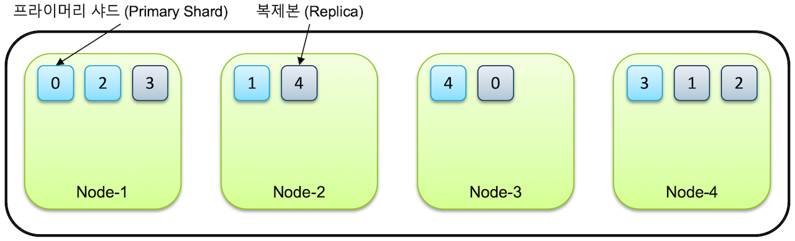
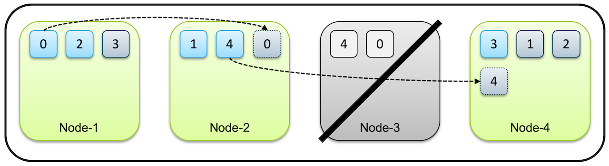

INDEX
- Shard란?
- Node란?
- 주의사항
1. Shard란?
이전 포스팅에서 ES는 Index단위로 데이터를 저장한다고 하였다. 이 Index는 Shard 단위로 분산저장된다.

위의 그림은 하나의 Index를 총 5개의 샤드로 분산저장한 그림이다.

그리고 이런 샤드는 분산저장이라는 수식어에 걸맞게 여러 노드로 분산시킬 수 있다. 또한 복제데이터를 생성할 수도 있는데, 이 경우 원본데이터인 프라이머리 샤드와 복제본인 래플리카 샤드로 구분된다.
노드가 1개만 있는 경우 프라이머리 샤드만 존재하고 복제본은 생성되지 않습니다. Elasticsearch 는 아무리 작은 클러스터라도 데이터 가용성과 무결성을 위해 최소 3개의 노드로 구성 할 것을 권장하고 있습니다.
위의 레퍼런스에서 말하듯, 만약 노드가 하나만 존재하는 경우에는 복제본이 필요없을 뿐더러 생성되지 않는다. 또한 같은 샤드와 복제본은 동일한 데이터를 담고 있으며 반드시 서로 다른 노드에 저장된다고 한다.

위 그림은 Node-3이 다운되었을 때 Elastic Search가 대체하는 과정을 나타낸다. Node-3가 다운되면, 0번 replica 샤드와 4번 primary 샤드도 다운된다. 이 경우 0번 replica 샤드는 새로 다른노드에 저장되며, 4번 primary 샤드는 기존 replica 샤드가 승계받게 된다.
이런식으로 multi-node ES 클러스터를 운용하게 되면, 가용성과 무결성에서 이점을 가져올 수 있다.
예시(primary 샤드 5, 복제본 1 인 books 인덱스 생성)
curl -XPUT "http://localhost:9200/books" -H 'Content-Type: application/json' -d' { "settings": { "number_of_shards": 5, "number_of_replicas": 1 } }'이렇게 되면 총
{number_of_shards}* ({number_of_replicas}+ 1 ) 개의 샤드가 생성된다.추후, replica를 없애는 것 또한 가능하다고 한다.
2. Node란?
노드는 Index의 샤드들을 저장하는 서버이다. 이러한 노드는 두 가지로 구분할 수 있다.
- Master Node : 인덱스의 메타 데이터, 샤드의 위치와 같은 클러스터 상태 정보를 관리하는 노드
- Data Node : 실제로 색인된 데이터를 저장하고 있는 노드
마스터 노드는 동일 클러스터 내 단 하나만 존재하여야 하며, 마스터 후보노드(master eligible node)들 사이에서 선출된다. 마스터의 역할과 데이터 노드의 역할은 중복이 가능하다. 만약 샤드의 개수가 많다면, 각각 역할을 분리시키는 것이 성능에 도움이 된다.
3. 주의사항
3-1. 짝수개의 마스터 후보노드의 개수를 설정했을 때 문제점 - Split Brain Problem
마스터 후보노드는 몇개가 적당할까? 이걸 정할 때는 Split-brain 문제를 고려해서 개수를 설정해야한다. 아래는 ES에서 Split-brain 문제가 발생할 수 있는 예시이다.
- The Split-brain problem
At any given time, there is only one master node in the cluster among all the master eligible nodes. Split-brain is a situation when you have more than one master in the cluster.
Let’s take for example a cluster that has two master eligible nodes, M1 and M2, with the quorum of minimum_master_node set to one. The split-brain situation can occur in the cluster if both M1 and M2 are alive and the communication network between M1 and M2 is interrupted. When that occurs, both M1 and M2 consider themselves to be alone in the cluster and both elect themselves as the master. At this point, your cluster will have two master nodes and you have a split-brain situation.
reference https://opster.com/guides/elasticsearch/best-practices/elasticsearch-split-brain/
위의 예시에서는 2개(짝수개) 마스터 후보노드 M1와 M2를 설정했다. 그리고 M1이 마스터 노드로 선정되었다고 하자. 그런데 M1과 M2 사이 네트워크 연결이 잠깐 유실되었다. 이렇게 되면 M1은 뭐 그대로 자기가 마스터 노드역할을 수행할 것이다. 하지만 M2는 M1이 죽었다고 판단, 새로운 클러스터를 생성함과 동시에 자기또한 마스터의 자격을 가져버리게 된다. M1과 M2 둘다 마스터 노드가 되어버린 상황. 두 개의 노드가 동시에 데이터를 인덱싱하고 수정하기때문에, 데이터 정합성 문제가 발생하게 된다.
그렇다면 어떻게 Split-brain문제를 피할 수 있을까? 아래의 두 가지를 설정하게 된다면 피할 수 있다.
- 홀수개의 마스터 후보노드 설정
- 클러스터 동작에 필요한 최소 마스터 후보노드 개수 설정(minimum_master_nodes)
자. 원문의 문제를 위의 두가지 원칙을 지키면서 해결해보자.
3-2. Solution
먼저 3개(홀수개)의 마스터 후보노드 M1, M2, M3를 설정한다. 이후 최소 마스터 후보노드 개수(minimum_master_nodes)는 2개로 설정한다.
minimum_master_nodes = ( master_eligible_node / 2 ) + 1 = ( 3 / 2 + 1 )
이 minimum_master_nodes 설정은 6.x 이전버전에서 직접 작성해야한다. 7.0 이후버전부터는 자동으로 계산해주기때문에, 초기 마스터노드 후보군 cluster.initial_master_nodes: [ ] 값만 설정하면 된다.
그러면 M2와 네트워크가 끊어졌을 때, M2는 자신을 새로운 클러스터의 새로운 마스터노드로 승급하려할것이다(또 다른 brain 발생). 하지만 M2가 속한 클러스터에서 마스터후보노드 개수는 1개이며, 이는 minimum_master_nodes보다 작기때문에 해당 클러스터는 동작하지 않도록 설정된다. 따라서 같은 클러스터 내 분열해도 하나의 마스터노드만 선출될 수 있게된다.
종합하면, 1. 마스터 후보 노드 개수는 항상 홀수로 하고 가동을 위한 2. 최소 마스터 후보 노드 설정은 (전체 마스터 후보 노드)/2+1 로 설정해야 한다.